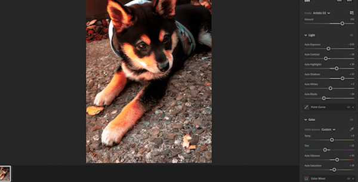
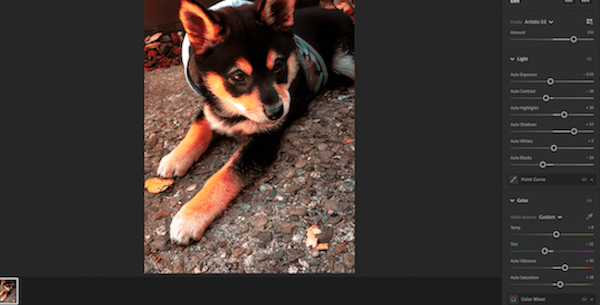

Spotify has a great selection of media to listen to. Phoebe has tried other subscription music services
like Apple Music or Soundcloud; however, she finds that Spotify has been the app she is drawn to the most.
A couple of her daily playlists are pictured here. Phoebe likes listening to bsd.u Radio for his chill lo-fi
beats. The same can be said for her Ichika Nito guitar playlist that she listens to also. Both playlists are mainly
instrumental, with very minimal lyrics. Because Phoebe tends to have many thoughts racing when shes balancing her work
and personal life, she tends to listen to upbeat but also calming rhythms. Phoebe really likes the daylist options that
the Spotify app offers. She likes how the app remembers certain types of songs and then curates a playlist for her.
That's how she found independent artists like Ichika Nito in the first place. Phoebe also utilizes listening to podcasts
and audiobooks on Spotify during her driving commute to campus. Her drive time can vary, but she can listen to a book in
about a week. Phoebe tends to read a book that interests her and then finds it again as an audiobook. She also likes listening
to podcasts and listen to interviews that make her laugh such as Fun With Dumb. Her choices regarding Spotify media reflect
a core personality trait in Phoebe's personal and digital existence which is to always find something good and simple to unwind with.
 


Theres always something new to find in color and photos for inspiration to create. Adobe Lightroom is a program that Phoebe is learning to use to edit her personal photos and interests. Shown is a simple edit of her dog, Hiero when he was a puppy. The puppy phase went by way too fast so she's giving him that moment on this page. Using Lightroom is different from when she used to develop natural photos in a actual dark room, but this program is another free digital canvas for Phoebe to learn about imagery and perspective. While Phoebe does mostly use the Adobe apps for school related projects, she also thinks they're fun to explore leisurely. Adobe color has many great curated color palettes, but Phoebe has made use of those influences to make few of her own as well. An app that Phoebe always has in her digital rotation is Pinterest. The Pinterest app is one of her favorite apps to use. Displayed is a random screenshot of Phoebe's daily feed to show what she sees day by day. Her Pinterest feed displays characters she likes (peep the cute Panda or the Pokemon). You may also notice the wallpapers. Phoebe changes her display pretty frequently since shes always staring at her screens. It nice to refresh the digital furniture regularly. She has built a daily habit now of just of randomly scrolling on Pinterest just to see color combinations and abstract art. Phoebe relies on these media habits for creative juice and helps her out of artists block. Phoebe admittedly knows she has much to learn to thrive as a creative, but remains grateful that there are many programs like these that support her visionary flow and artistic identity.